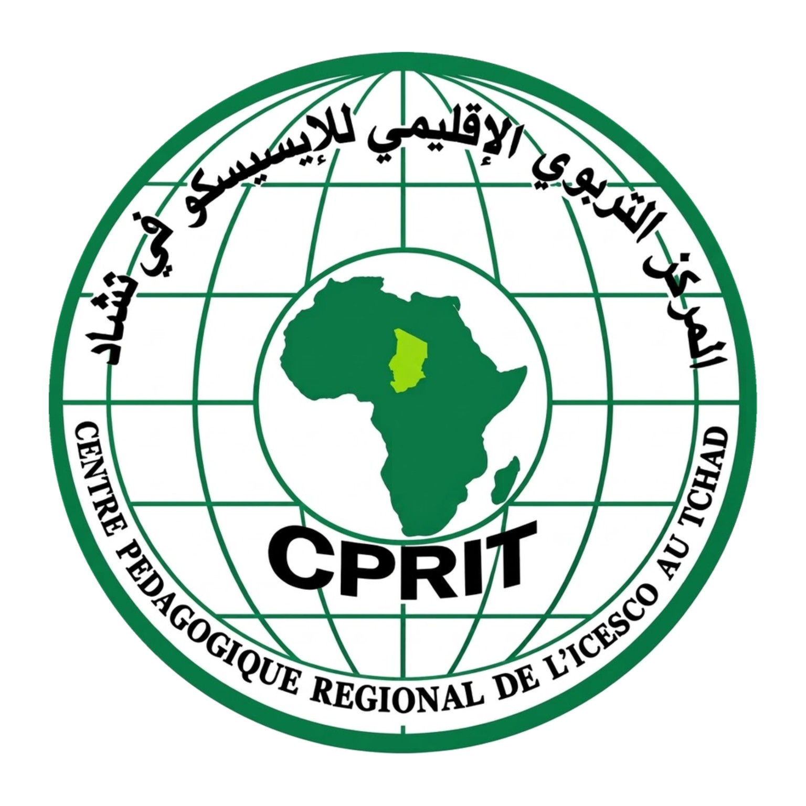

01
PREMIÈRE ANNÉE
Construire les fondamentaux
Acquisition des connaissances générales, découverte des sciences de l'éducation, apprentissage des principes pédagogiques et initiation aux pratiques d'enseignement.

CPRIT Centre pédagogique régionalLe Centre pédagogique régional de l'ICESCO au Tchad prépare les titulaires du baccalauréat au métier d'enseignant du primaire à travers un parcours professionnel de deux années.
Le Centre pédagogique régional de l'ICESCO au Tchad a pour vocation de contribuer à la préparation professionnelle des futurs enseignants du primaire.
À travers une formation structurée sur deux années, le Centre accompagne les apprenants dans l'acquisition des connaissances, des compétences pédagogiques et des pratiques nécessaires à l'exercice du métier.
Le numérique vient compléter cet accompagnement grâce à une plateforme dédiée aux cours, aux ressources pédagogiques et au suivi des apprentissages.
Un parcours destiné aux titulaires du baccalauréat qui souhaitent exercer dans l'enseignement primaire.
Acquisition des connaissances générales, découverte des sciences de l'éducation, apprentissage des principes pédagogiques et initiation aux pratiques d'enseignement.
Approfondissement des méthodes d'enseignement, préparation des leçons, évaluation des apprentissages et développement des compétences professionnelles.
Des espaces numériques organisés pour accompagner les formateurs et les futurs enseignants du CPRIT.
Publier les cours, partager les supports pédagogiques, organiser les exercices et suivre les résultats.
ACCÈS PROFESSIONNELConsulter les leçons, télécharger les documents, effectuer les exercices et suivre sa progression.
ACCÈS APPRENANTAccéder à distance aux cours, vidéos, ressources pédagogiques et activités de formation.
APPRENTISSAGE NUMÉRIQUEPoser des questions, demander des explications et obtenir une assistance pour mieux comprendre les notions étudiées.
ASSISTANCE INTELLIGENTELes espaces pédagogiques sont réservés aux apprenants inscrits et validés ainsi qu'aux formateurs autorisés par le CPRIT.
Vous êtes titulaire du baccalauréat et souhaitez devenir enseignant dans une école primaire ? Soumettez votre demande d'admission au CPRIT.
Accéder au formulaire d'inscription → Chaque demande est soumise à l'examen et à la validation du CPRIT.Pour toute information concernant les admissions, le parcours de formation ou les activités du Centre, notre équipe reste à votre disposition.
N'Djamena, République du Tchad
Les coordonnées officielles seront publiées après validation.